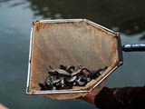
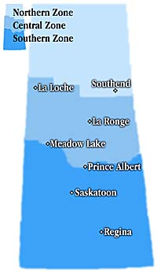

|
Commercial Fisheries Quiz

Directions: Read the statement and choose the most appropriate response. You may click the helpful hints button at any time. Good luck!
1. The commercial fishing industry in Saskatchewan has been in existence ***.
a. for over 100 years
b. since the early 1900's, when rail lines were in place to ship the harvest
c. around 1930, when filleting plants were built to help process the fish
d. since the establishment of the Fresh Water Fish Marketing Corporation
helpful hint
2. Fishing is a *** resource.
a. non-renewable
b. renewable
c. non-sustainable
d. none of the above
helpful hint
3. Use the map provided to answer the following question.

The main commercial fishing takes place in the ***.
a. northern zone
b. northern and central zones
c. central and southern zones
d. southern zone
helpful hint
4.
The main advantage to fishing commercially in winter is that ***.
a. ice is readily available
b. the fish caught during the winter are fresher than in the summer
c. more fish are available
d. the equipment required is minimal
helpful hint
5.
The length of the commercial fishing season depends on the ***.
a. number of commercial licences issued in that year
b. number of days as set by the Department of Environment and Resource Management
c. weather
d. quota of fish
helpful hint
6. The definition of aquaculture is ***.
a. the cultivation of aquatic animals and plants under controlled or semi-controlled conditions
b. the ability to control the rates of reproduction in aquatic animals such as rainbow trout
c. a method of farming using water to maintain growth of livestock
d. the use of aquatic plants and animals in certain farming techniques
helpful hint
7. Rainbow trout are the preferred stock for private aquaculture operations because ***.
a. their rate of growth is slow and thus places less stress on the fish
b. of the range of temperature they can withstand
c. pellet feed that must be given to the fish is relatively low in cost and available from local suppliers
d. none of the above
helpful hint
8.
Rainbow trout raised for market at a larger, commercial fish farm are fed a certain food containing a synthetic pigment ***.
a. in order to increase the size of the fish in a shorter period of time
b. to influence the sex of the eggs of the female
c. that helps 'boost' the immune system of the trout
d. to help deepen the flesh color to a red shade
helpful hint
9.
The main advantage to processing fish on the premises of a fish farm would be that ***.
a. the fish are freshest when delivered to the consumer
b. the harvest may be shipped directly to the buyer
c. more employees may be hired at the site
d. all of the above
helpful hint
10. Saskatchewan fish, commercially harvested, are destined for markets in ***.
a. Saskatchewan
b. the other provinces of Canada
c. throughout the world
d. there is not a large market for freshwater fish
helpful hint
|